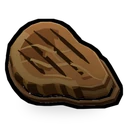
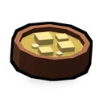

Coal
Coal is a common material. Dense fuel. Used for smelting and cooking.
Item sources
| Source | Quantity | Rarity | Notes |
|---|---|---|---|
| Desert Worm | 2–4 | 40% | |
| Garbage Man | 3–8 | 30% | |
| Sandstone Golem | 3–6 | 18.35% | |
| Wormling | 1–2 | 13.4% | |
| Slime | 2–4 | 12% | |
| Rockling | 1–3 | 10.56% | |
| Cultist | 3–6 | 1/10 | |
| Desert Worm | 40–80 | 1/105 | Rare Drop table |
| Possessed Sarcophagus | 40–80 | 1/105 | Rare Drop table |
| Sandstone Golem | 40–80 | 1/105 | Rare Drop table |
| Scrap Warlord | 40–80 | 1/105 | Rare Drop table |
| The Unbound | 40–80 | 1/105 | Rare Drop table |
| Bandit King | 20–40 | 1/145 | Rare Drop table |
| Bernie | 20–40 | 1/145 | Rare Drop table |
| Cult Leader | 20–40 | 1/145 | Rare Drop table |
| Cyclops | 20–40 | 1/145 | Rare Drop table |
| Punchy | 20–40 | 1/145 | Rare Drop table |
| Shooty | 20–40 | 1/145 | Rare Drop table |
| Lesser Cult Leader | 40–80 | 1/420 | Rare Drop table |
| Mummy | 40–80 | 1/420 | Rare Drop table |
| Raider | 40–80 | 1/420 | Rare Drop table |
| Garbage Man | 20–40 | 1/436 | Rare Drop table |
| Slime King | 20–40 | 1/436 | Rare Drop table |
| Bandit Elite | 20–40 | 1/582 | Rare Drop table |
| Super Zombie | 20–40 | 1/582 | Rare Drop table |
| Cave Spider | 40–80 | 1/841 | Rare Drop table |
| Rockling | 40–80 | 1/841 | Rare Drop table |
| Sand Veil Cultist | 40–80 | 1/841 | Rare Drop table |
| Sand Zombie | 40–80 | 1/841 | Rare Drop table |
| Wormling | 40–80 | 1/841 | Rare Drop table |
| Bandit | 20–40 | 1/1,164 | Rare Drop table |
| Cultist | 20–40 | 1/1,164 | Rare Drop table |
| Oak Entling | 20–40 | 1/1,164 | Rare Drop table |
| Slime | 20–40 | 1/1,164 | Rare Drop table |
| Squirrel | 20–40 | 1/1,164 | Rare Drop table |
| Zombie | 20–40 | 1/1,164 | Rare Drop table |
| Tier 1 Endless chest | 40–80 | 6% of its rows | Chest |
| The Dump chests | 20–40 | 35% of its extra row | Endless Dungeon |
| Sand Cave chests | 5–10 | 25% of its extra row | Endless Dungeon |
| Hellish Desert chests | 5–10 | 29.41% of its extra row | Endless Dungeon |
| Katherine's General Goods | 1 | 10 Gold | Shop |
Quest rewards
Uses
| Makes | Takes | Level | Notes |
|---|---|---|---|
 Guppy Stew Guppy Stew | 5 | 1 | |
 Minor Healing Potion Minor Healing Potion | 10 | 10 | |
 Iron Ingot Iron Ingot | 12 | 1 | |
 Mithril Ingot Mithril Ingot | 12 | 10 | |
 Adamantite Ingot Adamantite Ingot | 12 | 30 | |
| Adamantite Ingot | 6 | 33 | Master Refinery |
 Orichalcum Ingot Orichalcum Ingot | 12 | 50 | |
| Orichalcum Ingot | 10 | 50 | Master Refinery |
 Carrot Stew Carrot Stew | 5 | 15 | Cookhouse |
 Trout Pie Trout Pie | 10 | 25 | Cookhouse |
 Worm Steak | 5 | 30 | Cookhouse |
 Slime Broth Slime Broth | 20 | 35 | Cookhouse |
 Royal Slime Broth | 10 | 35 | Cookhouse |
 Emergency Ration Emergency Ration | 40 | 20 | Cookhouse |
 Draught of Fury ×2 Draught of Fury ×2 | 25 | 30 | Cookhouse |
 Ironbark Tonic ×2 Ironbark Tonic ×2 | 20 | 35 | Cookhouse |
 Hunter's Brew ×2 Hunter's Brew ×2 | 15 | 25 | Cookhouse |
 Scholar's Tea ×2 Scholar's Tea ×2 | 15 | 40 | Cookhouse |
 Gilded Draught ×2 Gilded Draught ×2 | 20 | 40 | Cookhouse |
 Gambler's Brew ×2 Gambler's Brew ×2 | 15 | 45 | Cookhouse |
 Fertiliser Fertiliser | 10 | 5 | |
 Warden's Seal Warden's Seal | 10 | 26 | Sealwright |
 Treasure Seal ×2 Treasure Seal ×2 | 15 | 30 | Sealwright |
| 20 | 28 | Cartographer's Table | |
 Dump Chart ×2 Dump Chart ×2 | 60 | 38 | Cartographer's Table |
 Cave Chart ×2 Cave Chart ×2 | 20 | 40 | Cartographer's Table |
 Riveted Plate Riveted Plate | 10 | 60 | Smelter |
Notes
Not written yet
When Coal is worth getting, and what to do with it.
Gallery
Not written yet
No pictures yet: renders, models and animations go here.
Trivia
Not written yet
Anything else worth knowing.
Changes
Not written yet
What changed for Coal, update by update.